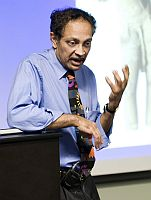

Si sólo Freud hubiese conocido a Ramachandran. El genio austriaco de la conducta y la cognición era terrible en la experimentación. Freud era un pensador excelente y un observador bien afilado, aún así, los orígenes de sus ideas siguen limitados no sólo por el escaso conocimiento neurológico y la casi inexistente tecnología de la época sino por un déficit personal acerca de cómo hacer ciencia. Irónicamente, Sigmund nos enseñó que la conducta humana puede ser estudiada de forma científica y el estudio del comportamiento animal es uno de los más prolíficos en la actualidad.

Ha pasado mucho tiempo desde que Breuer y Charcot arruinaran para siempre la palabra histeria. No obstante y para sorpresa de muchos, aquella “limpieza de chimenea” o “terapia del habla” a la que se refería la popular paciente Anna O. durante sus estrambóticas sesiones con Breuer (¿primer caso de ‘transferencia’ del deseo sexual llevada a la práctica?), todavía forma parte de la psicología actual. El psicoanálisis, como el rezo o la homeopatía, se resiste a morir a pesar de que no existe evidencia alguna de que funcione; sólo décadas y décadas de divanes y sofás sin respaldos científicos.
“Es una de las razones principales por la cual el psicoanálisis al estilo Freudiano ha dejado de estar de moda: su alto costo. Este tratamiento que puede durar años no ha sido equilibrado con evidencias sobre su eficacia”, expresaron los editores del diario británico Nature en su editorial del 15 de octubre del 2009. “Hoy, sin embargo, existe una moral imperativa de convertir la psicología en una ciencia robusta y valorada. De hecho, en los últimos 20 años la psicología clínica y la experimental han dado pasos positivos al utilizar herramientas que pueden avanzarlas en la dirección correcta, como son los equipos de imágenes neuronales y la genética molecular; ciertamente, numerosas intervenciones psicológicas han demostrado ser efectivas y relativamente baratas. Sin embargo, muchos psicólogos prefieren recurrir a pseudoterapias que no están basadas en experimentación ni sostenidas por evidencias”.
Ahora cualquiera se declara psicólogo. Otra de las genialidades de Sigmund fue convencernos de que el estudio de la conducta es mayormente una cuestión de conjeturas. Sin olvidar, por supuesto, que para aquel gran pensador, cada anomalía en nuestro comportamiento provenía de algún conflicto sexual. Hoy sabemos que no es así, el comportamiento animal es mucho más complejo y está muy influenciado por la biología y no sólo por el medio; la genética y la neurología siendo sumamente significativas. Además, el sexo es sólo una parte (aunque bastante impactante) de todo el meollo, de hecho, los conceptos y aquella famosa trinitaria de Freud, Id, Ego y Súper Ego [*], son reflejos de su época victoriana: un período de absurda represión sexual debido a una fuerte opresión religiosa; Freud se reveló contra la segunda y responsabilizó a la primera de todos los males de la humanidad, alineándose de esa forma con la religión.
No obstante, sus observaciones están repletas de argumentos tan intuitivos que parecen dar en el clavo. “La persona en estado de negación sabe pero no sabe; la negativa consciente de percibir hechos perturbadores retira de la persona no sólo la percepción necesaria para hacer frente a los desafíos externos, sino también la capacidad de recurrir a las apropiadas estrategias de supervivencia”.
Por otro lado, una vez nos adentramos en sus hipótesis, nos ahogamos en un mar filosófico donde las evidencias y los experimentos brillan por su ausencia. “El fetiche es el sustituto del pene de la mujer (de la madre) en el que el niño una vez creyó, por razones familiares a nosotros, pero al que no quiere renunciar. Entonces lo que ocurre es que el niño se rehúsa a formar una cognición del hecho de haber percibido que la mujer no posee un pene. No, eso no puede ser verdad: porque si una mujer ha sido castrada, su propia posesión de un pene estaría en peligro”, escribió el pensador en 1927.
Contrario a Freud, Vilayanur S. Ramachandran centra sus investigaciones en la experimentación. Cada vez que este neurólogo se topa con un caso clínico extraordinario, idea una forma de comprobar si sus postulados sobre lo que está ocurriendo en el cerebro del paciente son correctos. Veamos unos interesantes ejemplos de incidentes extremos de aparentes conflictos ‘freudianos’ y cómo, evidentemente, no tienen que ver con la envidia al pene y sí con el funcionamiento apropiado de las estructuras cerebrales.
Luego de padecer un derrame cerebral, muchos pacientes atraviesan por una particular etapa de negación. Durante por lo menos dos o tres semanas (en algunos pacientes perdura por mucho más tiempo), sus cerebros intentan formular una historia coherente sobre lo que ha pasado y el mecanismo que eligen para hacerlo es, precisamente, reprimir y negar lo ocurrido para luego inventar y confabular un sinnúmero de historias y mentiras que justifiquen el estado actual y al mismo tiempo protejan el status quo. Ramachandran realizó un pequeño experimento con algunos de estos pacientes, involucraba una bandeja con seis vasos plásticos, todos con agua hasta la mitad.
“Si te pido que levantes la bandeja, inmediatamente pondrás cada una de tus manos en uno de sus extremos. Ahora bien, si te pido que la cargues con una mano amarrada a tu espalda, pondrás la mano libre en el medio de la bandeja, donde quedará el eje de su equilibrio. Esto último fue justamente lo que hicieron las personas con un lado paralizado por derrames pero que no padecían de negación. Sin embargo, cuando pedí lo mismo a los pacientes de derrames que sí padecían de negación, la mano que no estaba paralizada tomó un extremo de la bandeja y la levantó, todos los vasos cayeron hacia el lado opuesto”, explica el neurólogo en su libro Fantasmas en el cerebro.
Para estos pacientes en negación, la mano paralizada funciona perfectamente. En su visión del mundo y de su imagen corporal, esa mano se levantó y agarró el otro lado de la bandeja como lo hizo tantas veces antes del derrame. De hecho, Ramachandran ha realizado un sinnúmero de experimentos para ver qué tan profunda y arraigada se encuentra esta negación. En algunas ocasiones les daba a elegir tareas donde podrían usar ambas manos o sólo una, y los pacientes en negación siempre elegían las tareas que requerían de ambas manos. Para el neurólogo, es extraordinaria la confabulación posterior a la negación.
“Una de mis pacientes ni siquiera intentó negar el desastre provocado por la bandeja. Cuando le pregunté si había conseguido levantarla me aseguró, ‘pero por supuesto que sí, doctor’, con todo el regazo mojado por el agua derramada. Otra de las pacientes en estado de negación del grupo donde les di a elegir entre amarrar cordones o enroscar un bombillo aseguró después a una de mis asistentes que había conseguido amarrar los cordones ‘con ambas manos’. Este tipo de razonamiento me hace pensar que algo más anda mal, la señora sabe pero su cerebro reprime el conocimiento o no tiene acceso a él, y cubre sus mentiras haciendo énfasis en conductas que una persona normal no usaría, como resaltar que se amarró los cordones ‘con ambas manos’”.
Ya bien lo observaba Freud, el paciente “sabe pero no sabe”.

Ejemplos así abundan en los escritos de este gran neurólogo nacido en la India y hoy radicado en la Universidad de California en San Diego (UCSD). Ramachandran, que ha dedicado su vida profesional al estudio de la red neuronal humana y su impacto en nuestra conducta, explica que el cerebro es bombardeado incesantemente con estímulos; no sólo los que recibimos de fuera sino los que se originan en nuestras propias sinapsis. El órgano gris y blanco está formado por módulos interconectados que se delegan funciones entre sí, estas áreas especializadas, sin embargo, son bastante flexibles y están, no sólo concentradas en sus labores, sino en constante intercambio de información respecto a lo que ocurre en todo el cerebro. La red neuronal forma una idea coherente de los movimientos del animal en el medio y una imagen de su cuerpo y de sus distintas funciones. Para ello usa filtros, cuenta historias, descarta ideas y promueve otras, conformándonos así de coherencia. En ese sentido, nos dice Ramachandran, el hemisferio izquierdo es el intérprete. Es donde surge nuestro “sistema de creencias”, allí se elaboran historias que tengan sentido para cada uno de nosotros, integrando nuevos datos a nuestra forma de pensar. Este hemisferio es conformista y altamente indiferente a discrepancias. Cuando llega información disonante, ¿qué hace el hemisferio izquierdo?, pues ignora la anomalía completamente o la tergiversa para que quepa en la visión del animal, preservando así su estabilidad (los creacionistas son maestros de esta última técnica).
Y es precisamente cuando las disonancias son enormes que el hemisferio derecho, que Ramachandran llama el abogado del diablo, se levanta con el objetivo de impedir más cuentos primorosos perpetrados por el zurdo y preparar al animal para cambiar su punto de vista si lo ve necesario. El hemisferio derecho es altamente sensible a perturbaciones y discrepancias, ahora veamos por qué.
De los experimentos de Ramachandran con pacientes en estado de negación surgió el estudio realizado por Ray Dolan y Chris Frith del Hospital para Desórdenes Neurológicos Queen Square en Londres. El equipo de investigadores descubrió la zona en el cerebro que maneja las discrepancias, un pequeño espacio en el hemisferio derecho que recibe información del lóbulo parietal derecho, esta región se activa cada vez que detecta incompatibilidades y funciona para ambos lados del cerebro. Otros experimentos con irrigación de agua fría en el canal ótico parecen despertar al dormido hemisferio derecho y retiran, temporalmente, la negación en estos pacientes, revelándoles la realidad. “Imagine pues lo maravilloso que sería poder erradicar el fenómeno de negación en una paciente con anorexia”, expresa Ramachandran.
Es en estos ámbitos clínicos y de experimentación donde debe concurrir la psicología. Los psicólogos modernos necesitan integrar los conocimientos en genética y neurología en la elaboración de sus terapias y experimentos. La psicología de la evolución, a pesar de las batallas libradas entre darwinistas sociales y deterministas culturales y de ser una ciencia basada en un sinnúmero de conjeturas, promete avanzar aún más la solidez del estudio de la conducta a través de la primatología y otras áreas similares. La negación, por ejemplo, podría tratarse en realidad de un mecanismo evolutivo que surge para proteger al animal de fuertes traumas, manteniendo así estable todo su sistema de creencias mientras se restaura la nueva visión del mundo. Habrá que ver si nuestros primos los chimpancés y los bonobos padecen de estos estados o si son enjutas desarrolladas exclusivamente del complejo comportamiento humano.
La comunicación, incuestionablemente, es parte prioritaria de cualquier terapia que desee entender el comportamiento de un individuo. En la actualidad, técnicas basadas en nuevos descubrimientos sobre modificación de conducta están siendo aplicadas de forma efectiva en numerosos trastornos; en ese sentido, es imperante recordar que todas las palabras y las acciones son generadas por el cerebro y es en ese complejo lío neuronal y su relación directa e indirecta con el medio, donde debe comenzar a dilucidarse el procedimiento animal, y no en la desentonadamente oscura relación con los genitales de sus progenitores.
Escápese de las tiranías de su biología
REM y el monopolio del sueño
El Homo sapiens no tiene que ser esclavo de su biología. El desarrollo cerebral nos permite liberarnos de sus ataduras, específicamente en esos casos que conciernen nuestras conductas. A través del conocimiento es posible controlar los instintos y actuar racionalmente para obtener resultados productivos en vez de ‘meter la pata’ una y otra vez. Por supuesto, no es el estado actual de las cosas. La mayoría de los seres humanos sucumbe ante las demandas de placer exigidas por el cerebro y recurren a la negación, la represión y la confabulación para conseguir satisfacerlas.
Actualmente, la psiquiatría y la psicología moderna están conformadas por tres pilares importantes: los genes, la función cerebral y el historial de cada individuo. Y la cosa no queda ahí, el pasado completo de la especie está siendo desmenuzado con el objetivo de comprender mejor por qué actuamos como actuamos. Hoy, nuestra sabiduría reposa en aceptar los cambios sostenidos por las evidencias e integrarlos a una nueva visión de las cosas. Hace poco me enteré, por ejemplo, que soñamos fuera del REM. Ese estado conocido como ‘movimiento rápido del ojo’ poseía el monopolio de los sueños y saber que no es así me sorprendió más allá del dato ya que por un breve instante me aferré a la vieja tesis; pero las evidencias tienen siempre la última palabra.
Y aunque es sumamente dificultoso cambiar nuestra forma de pensar, es también nuestra obligación como supuestos animales racionales. Además, si no fuese así estuviésemos todavía donde empezamos millones de años atrás. Avanzar es cambiar un pensamiento por otro que funcione mejor, adaptar nuestras vidas a los nuevos conceptos y sus tecnologías y aplicar la sapiencia para que nos beneficie a todos.

Es en ese sentido que veo estancada a la psicología y uno de los problemas es que nos apegamos a paradigmas que una vez parecieron funcionar. La interpretación de los sueños, por ejemplo, así como la prueba de Rorschach, debe permanecer olvidada en el baúl de los recuerdos de la infancia de la psicología. De hecho, la neurología cambió completamente la idea que teníamos de los sueños. Otorgarle un significado con una interpretación más o menos fija a un objeto con el que hemos soñado es lo mismo que leer el Tarot, el horóscopo o usar la ilusión óptica de la bailarina giratoria para desvelar la personalidad de cualquier individuo. Ninguna funciona. Más aún, la interpretación de los sueños ha dado cabida a un sinnúmero de historias paranormales y terapias fraudulentas que prometen cualquier disparate y hasta las historias de secuestros humanos por extraterrestres son producto de desórdenes del sueño, como las noches de terror y otras pesadillas.
Descubrir que soñamos en otras etapas que no son necesariamente de REM supone un conocimiento extraordinario para los estudiosos del sueño; lo mismo ha ocurrido con los resultados de un experimento a largo plazo llevado a cabo por Calvin Hall. Los investigadores analizaron una serie de diarios de sueños, de adolescentes y adultos, y los resultados aseguran que el contenido de nuestros sueños es continuo con el comportamiento y el pensamiento que nos caracteriza cuando estamos despiertos. Es decir, si somos extrovertidos y activos en nuestra vida diaria pues así mismo serán nuestros sueños, obviamente, esta visión de soñar contradice las interpretaciones de Freud y Jung.
Otras técnicas han caído bajo la navaja de Occam perpetrada por la experimentación. La ilusión óptica de la silueta que gira, junto a otras similares, es sólo una de las más recientes. Esta imagen en movimiento se usó durante mucho tiempo como una forma de saber si el individuo tenía personalidad del hemisferio derecho o del izquierdo (¿?). No obstante, el profesor de psicología, el doctor Niko Troje, ha demostrado con un simple experimento que la bailarina cambia de dirección de acuerdo al ángulo desde el cual se le mire y no de acuerdo a la personalidad del observador. Estos mismos resultados pueden ser extendidos para otras ilusiones y pruebas que son regularmente usadas para medir la personalidad y que están basadas en conjeturas e ideas y no en experimentos sólidos.
Soñamos en varias etapas y no sólo durante el REM; asimismo, los sueños son una continuación de lo que somos cuando estamos despiertos. A lo mejor pase mucho tiempo antes de que conozcamos con exactitud por qué el cerebro sueña, mientras tanto, es bueno saber que no tenemos que pagarle a nadie para que nos diga que soñar con el océano delata una enigmática profundidad del subconsciente, cuando realmente nos hemos pasado todo el día deseando estar en la playa.
Volver al índice de la Lupa Herética
© 2008-2025 Glenys Álvarez y Sin Dioses. Prohibida la reproducción con fines comerciales.
Comentarios
Comments powered by Disqus